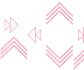

In 2016, the Pru UK IT team determined that the existing toolset and capability for monitoring applications did not provide a sufficient service for performance management of customer facing applications. In order to improve the ability of Pru UK to detect, predict and resolve issues, an investigation into a new application performance management (APM) suite was launched. The business case was based on significant efficiency savings through the reduction of major incidents and the time taken to resolve them. The time spent resolving such incidents could also be allocated to more productive tasks.
The primary objective of the project was to identify an AM tool vendor that can help protect and improve customer and adviser experience by:
The requirements were captured and RFP initiated to select and implement a strategic tool suitable for monitoring any Prudential application. A POC was also implemented with two shortlisted vendors to focus upon those applications for which downtime or performance issues would have a direct impact on customers and advisers. The final recommendation was based on functional, non-functional and commercial factors.
Following an analysis of the market leading tools, AppDynamics was selected through competitive tender as the APM suite for Pru UK. To improve the use of application monitoring and maximise the investment in AppDynamics, Pru UK also performed a deep dive review to develop a target operating model for application monitoring. This defined the strategy and roadmap for establishing the aims of APM, providing clarity on the application monitoring landscape and developing the target support model, based on good practice in industry.
- Identifying broken or poorly performing applications and services before our customers do.
- Reducing the time to isolate and resolve incidents in our applications through improved tools and collaboration.
- Providing key stakeholders with improved visibility of service usage, performance and dependencies.
The requirements were captured and RFP initiated to select and implement a strategic tool suitable for monitoring any Prudential application. A POC was also implemented with two shortlisted vendors to focus upon those applications for which downtime or performance issues would have a direct impact on customers and advisers. The final recommendation was based on functional, non-functional and commercial factors.
Following an analysis of the market leading tools, AppDynamics was selected through competitive tender as the APM suite for Pru UK. To improve the use of application monitoring and maximise the investment in AppDynamics, Pru UK also performed a deep dive review to develop a target operating model for application monitoring. This defined the strategy and roadmap for establishing the aims of APM, providing clarity on the application monitoring landscape and developing the target support model, based on good practice in industry.